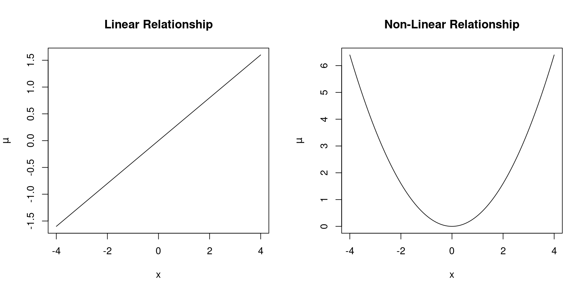
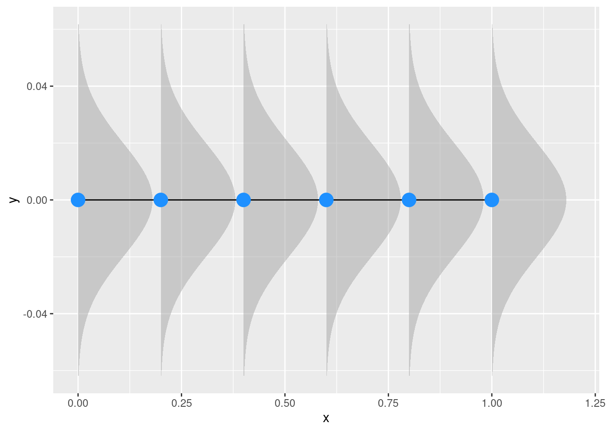
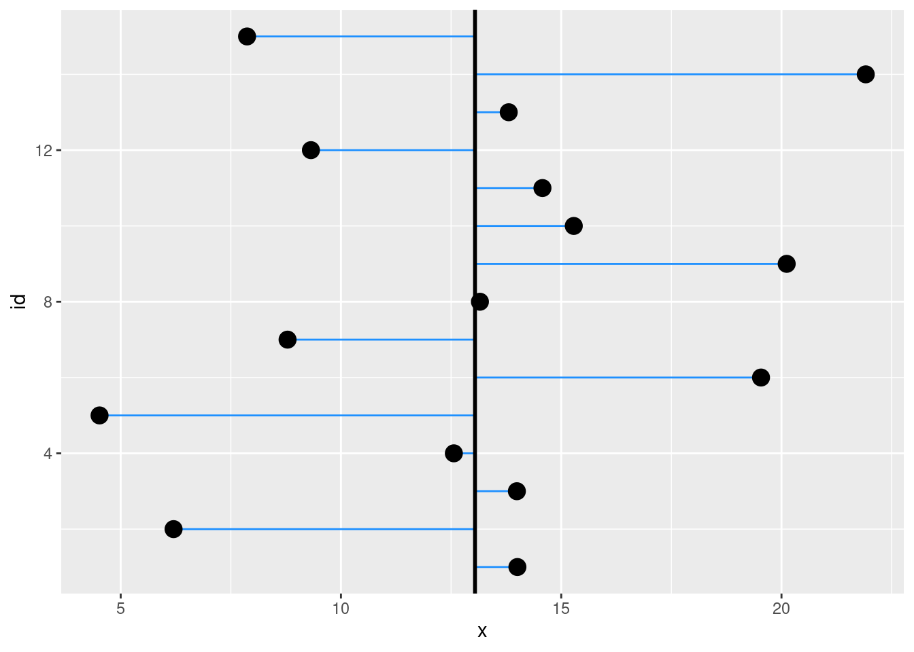

Any statistical model is composed by a systematic component and a random component.
Systematic component
The systematic component is a mathematical relationship between a set of variables (usually called predictors or independent variables) \(x_p\) (\(p = 1, 2, \dots, p\)) and a set of unknown regression parameters\(\beta_0, \beta_1, \dots, \beta_p\). The constant term \(\beta_0\) (i.e., the intercept) increases the total number of coefficients \(p' = p + 1\). If the intercept is not included \(p' = p\).
\(\mu_i\) is the expected value (i.e., the mean) of the \(i\)-th observation with certain values of \(x_p\) and a set of coefficients \(\beta_j\). Formally, \(\mu_i = \mbox{E}[y_i]\)
For example, assuming to have two predictors \(x_1\) and \(x_2\), a systematic component could be:
Basically this equation describes how the expected value of the random variable \(Y\) varies when considering two predictors \(x_1\) and \(x_2\).
To generalize, the previous equations can be written in matrix form thus considering any number of observations \(n\), predictors \(p\) and model coefficients \(j\):
Notice that we already defined \(p'\) as the number of coefficients plus the constant term (i.e., the intercept) if present. This means that \(\mathop{\mathbf{X}}\underset{n \times p'}{}\) should have dimension \(p\) and not \(p'\). This is the reason why when the model includes the intercept we always have an extra column of ones. In later sections about matrix algebra the reason will be more clear. The \(\mathop{\mathbf{X}}\underset{n \times p'}{}\) is called the model matrix. For example, let’s see the difference between the dataset and the design matrix in R. Let’s simulate two predictors \(x_1\) and \(x_2\):
# this is our datasetdat <-data.frame(x1 =rnorm(10), x2 =rnorm(10))head(dat)
# using the model.matrix() function we can create X. p' = p + 1# we need to include the same formula as the model we want to useX <-model.matrix(~ x1 + x2, data = dat)head(X)
The random component describes the (random) variation around the systematic component. The random component usually define the type of model used. In fact, different models can have the same systematic component but different random components.
We can use the term \(\mbox{var}[y_i]\) to define the variability of our response variable. For example, when we can make the assumption that \(\mbox{var}[y_i] = \sigma^2\). Notice that we do not have a subscript \(i\) because we are making the assumption that the variance is the same for each observation.
Another assumption could be that the variation around \(\mu_i\) (the expected value considering a certain combination of the random component) is regulated by a Gaussian distribution with a constant variance. In other terms we can write:
\[
y_i \sim N(\mu_i, \sigma^2)
\]
With \(\sim\) that means “distributed as” and \(N\) in this case indicating a Gaussian distribution.
This means that each observed value \(y_i\) comes from a Gaussian distribution with mean \(\mu_i\) (a certain combination of the systematic component) and variance \(\sigma^2\) (common for all observations). This is only one of the possible random components but it is very common because it exactly describes what is usually called linear regression.
Probably you are more familiar with this equation:
\[
y_i = \mu_i + \epsilon_i
\]
With \(\mu_i\) as \(\beta_0 + \beta_1x_{1i} + \dots + \beta_px_{pi}\) and \(\epsilon_i \sim N(0, \sigma^2)\). This is exactly the same model but here focused on expressing residuals \(\epsilon_i = y_i - \mu_i\) with expected value of 0.
Link function
A generalization of the systematic component includes the introduction of the link function\(g(\cdot)\) The link function is a monotonic and differentiable function mapping the relationship between the systematic component and the random component. We need to differentiate between \(\mu_i\) as the expected value of the random variable \(Y\) in the original scale and \(\eta_i\) as the expected value of the random variable after applying the link function. In other terms:
\[
\eta_i = g(\mu_i)
\]
\[
\mu_i = g^{-1}(\eta_i)
\]
There are several link functions such as the logarithm or the logit. A special type of link function is called identity where \(\mu_i = \eta_i\). This is the link function used in the standard linear model. Other link functions are always paired with the inverse link function. For example, if \(g(\eta_i) = \mbox{log}(\mu_i)\) then \(\mu_i = g(\eta_i)^{-1} = e^{\eta_i}\). In other terms the exponential is the inverse link function of the logarithm.
What is linear about (generalized) linear models
The usual term for linear is about the shape of the function. For example, a straight line \(\mu_i = \beta_0 + \beta_1x_{1i}\) is considered a linear relationship. On the other side, a quadratic relationship in the form \(\mu_i = \beta_0 + \beta_1x_{1i} + \beta_2x^2_{1i}\) is not a linear relationship.

We know that we can include \(x^2\) as predictor in a linear regression. This means that the linear regression can estimate non-linear relationships? In fact, the linearity assumed by the (generalized) linear regression is called linearity in the parameters and not in the predictors. In other terms the coefficients of the model are always additive (\(\beta_0 + \beta_1\)) while predictors can be squared, divided, multiplied (as in interactions), etc.
Matrix formulation
Matrix notation has already been used above and it is very useful to write regression models more compactly. We use bold letters such as \(\mathbf{y}\) to indicate a vector or a matrix while \(y_i\) indicate a single number (also known as scalar). A matrix is a two-dimensional data structure with \(p\) rows and \(q\) columns is called a \(p \times q\) matrix (the total number of elements is \(p \times q\)). A vector is a special type of matrix where one of the two dimensions has length 1.
In this context, \(\mathbf{v} = \mathbf{w}^{T}\) where \(T\) stands for transponse that means switching rows and columns. Note that in R doing x <- c(1, 2, 3, ...) is creating a vector that by definition is a one-dimensional structure that is treated differently compared to a matrix with one of the two dimension fixed to 1.
t(v) == w # same, only because we have the same data. "same" means in terms of dimensions length
[,1] [,2] [,3]
[1,] TRUE TRUE TRUE
(x <-c(0, 0, 0))
[1] 0 0 0
# different class, in Rclass(x)
[1] "numeric"
class(w)
[1] "matrix" "array"
The most important operation of matrix algebra is matrix multiplication. The idea is simple but not quite intutive. Let’s assume to have two \(3 \times 3\) matrices and we want to make some operations.
Why this is useful? What we did in Equation 1 is basically summing all the multiplications between each predictor value for each observation \(x_{pi}\) and the corresponding coefficient \(\beta_p\). Let’s imagine to have a simple dataset with two predictors \(x_1\) and \(x_2\) and three coefficients \(\beta_0\) (the intercept) and \(\beta_1\) (the slope for \(x_1\)) and \(\beta_2\) (the slope for \(x_2\)):
The same operation can be computed using matrix multiplication. If you recall the matrix formulation of the linear model introduced in Equation 2, then we can just compute \(\mathop{\mathbf{X}}\underset{n \times p'}{}\) multiplied by \(\mathop{\boldsymbol{\beta}}\underset{p' \times 1}{}\). Basically we are doing the crossproduct between each row of \(\mathop{\mathbf{X}}\underset{n \times p'}{}\) and each column (there is only one given that is a matrix \(p' \times 1\)). This means that we are doing (mu <- with(dat, b0 + b1 * x1 + b2 * x2)) this without writing all coefficients and predictors.
# notice that also B <- c(b0, b1, b2) works because is a vector and not a matrix# same as (mu <- with(dat, b0 + b1 * x1 + b2 * x2))c(X %*% B) # c() just to force to a vector, better printing
For the random component that we can define as \(\mbox{var}(\mathbf{y})\) we also have a matrix formulation. In particular we have a \(n \times n\) matrix defining the variance of each observation (the diagonal) and the covariance between observations. Beyond the systematic component \(\boldsymbol{\mu}\) we can define the random component as \(\mbox{var}[\boldsymbol{\epsilon}]\).
To make a concrete example, let’s think about the standard linear model. Two important assumptions are:
homogeneity of residual variances: thus the variance of errors around predicted values is constant
observations are independent: there is no correlation between residuals
Thus, assuming to have \(n = 5\) observations \(\mbox{var}[\boldsymbol{\epsilon}]\) would be:
No correlations between residuals and constant variance. This is an appropriate matrix for a standard linear model. In fact, \(\mbox{var}[\boldsymbol{\epsilon}]\) can be written also as \(\mbox{var}[\boldsymbol{\epsilon}] = \mathbf{I}\sigma^2\) where \(\mathbf{I}\) is called an identity matrix i.e. a matrix with 1 in the diagonal and 0 in off diagonal elements. If you multiply \(\mathbf{I}\) by a constant \(\sigma^2\) you obtain the previous matrix.
In matrix form the errors of the standard linear model are written as \(\mathop{\boldsymbol{\epsilon}}\underset{n \times 1}{}\) because there are no covariances and the matrix can be simplyfied to a vector. Sometimes we can relax the constant \(\sigma^2\) assumption and the diagonal will be composed by different values.
Notice that we used \(y\) and not \(\mu\) because we are including errors. The systematic component \(\mu\) plus the error term \(\epsilon\) gives the observed value.
There is still no reference to the distribution of errors, only the assumption about constant variance and no covariance. If we assume that errors are distributed as a Gaussian distribution we can write:
Just a minor clarification about \(\mbox{N}\). This is the shortcut for a Gaussian distribution but the idea of a Gaussian distribution is to have a single \(\mu\) and \(\sigma^2\). When we include predictors \(\mathbf{X}\boldsymbol{\beta}\) we are saying that \(\mu\) changes thus there is a different \(\mu\) for each combination of \(\mathbf{X}\boldsymbol{\beta}\). The same holds for \(\sigma^2\) but here we have a single value by definition.
On other terms, we are saying that we have a set of Gaussian distributions for each combination of \(\mathbf{X}\boldsymbol{\beta}\) with constant \(\sigma^2\).
This is the same as sying that we have a multivariate Gaussian distribution \(\mbox{MNV}\) with a vector of means (i.e., \(\mathbf{X}\boldsymbol{\beta}\)) and a variance-covariance matrix as \(\mathbf{I}\sigma^2\). In the next section the plot will clarify this subtle but important concept.
In R this can be explained with a t-test. A t-test is essentially a linear model with a binary predictor \(x\) and a continuous response \(y\).
The model equation is:
\[
y_i = \beta_0 + \beta_1x_{1i} + \epsilon_i
\]
\(x_1\) can takes values 0 (for the group 1) and 1 (for the group 2). The errors are normally distributed with \(\sigma^2 = 1\).
N <-10# total sample size(x <-rep(0:1, each = N/2))
[1] 0 0 0 0 0 1 1 1 1 1
s2 <-1b0 <-0.3# mean of group1b1 <-1# difference between group2 and group1# using rnorm (i.e., the "univariate" normal distribution)(mu <- b0 + b1 * x) # systematic component
[1] 0.3 0.3 0.3 0.3 0.3 1.3 1.3 1.3 1.3 1.3
(y <- mu +rnorm(N, 0, sqrt(s2))) # sqrt() because rnorm wants the standard deviation
This code is vectorizing the rnorm() operation. In other terms, each element \(i\) out of \(n\) elements could in principle have different \(\mu\) and different \(\sigma^2\). Is like creating a grid of values and looping a rnorm call:
This is exactly the same but in R the rnorm is vectorized thus we can directly provide a vector for \(\mu\) and \(\sigma^2\).
In fact, the vectorized rnorm can be considered a sort of special case of a multivariate gaussian distribution where off diagonal element of the variance-covariance matrix are zero thus we simply have the diagonal. In this special case, the diagonal could also be reduced to a single value given that is a constant.
Let’s see the same simulation but using a proper multivariate gaussian distribution (MASS::mvrnorm())
If we remove the x effect thus we calculate residuals, we are basically centering each value on the value predicted by the model. In this case we are substracting the blue points from the black points.
Code
ggplot(dd, aes(x = x, y =0)) +stat_slab(aes(ydist =dist_normal(0, 0.02)), alpha =0.5) +geom_line() +geom_point(size =5, col ="dodgerblue")+xlab("x") +ylab("y")

Figure 2: Linear model assumptions about residuals
We have few important points here:
\(\mu\) and \(\sigma^2\) are independent in a linear model. Changes in the mean are not reflected or related to changes in \(\sigma^2\) that in any case is assumed to be fixed.
The assumption of normality is on residuals after removing the effect of the covariates and not not on the raw \(\mathbf{y}\) vector.
As a little note, the assumption of constant \(\sigma^2\) is something crucial for standard linear models but can be easily relaxed using other types of models. For example, the so-called localtion-models are able to extend the standard linear models including predictors both on \(\mu\) and \(\sigma^2\). For example in Figure 3 you can see a model with an increasing \(\mu\) but also an increasing \(\sigma^2\). This is something would violate the assumptions but using location-scale models (e.g., see the lmls or the gamlss packages for an R implementation) you can model both parameters of the assumed distribution.
Figure 3: Example of increasing \(\mu\) and \(\sigma^2\) as a function of a predictor \(x\)
Extra
Covariance and Correlation
We used the term covariance and correlations but what is the actual difference and how to move from one to the other.
Firstly, these two terms come into place when we want to evalute a bivariate relationship between two variables \(x\) and \(y\). At the univariate level, the first important quanitity is the deviance or sum-of-squares \(\mbox{SS}\). Goes without saying that \(SS_x\) is the sum of the squared distance between \(x_i\) and the mean of \(x\) (\(\bar x\)).
\[
SS_x = \sum^{n}_{i = 1} (x_i - \bar x)^2
\]
This quantity grows as the distance around the mean grows. But what is the average distance? We can divide the sum by the total \(n\) to obtain the average distance (squared) from the mean:
This is the variance of \(x\), usually defined using \(\sigma^2_x\). If we take the square root of \(\sigma^2_x\) we obtain the standard deviation of \(x\). The standard deviation is directly intepretable as the average distance from the mean. A standard deviation of \(\sigma_x = 2\) means that, on average, the elements of \(x\) as a distance of 2 (2 needs to be interpreted in the scale of \(x\)) from the mean.
Code
x <-rnorm(15, 10, 5)data.frame(x, id =1:length(x)) |>ggplot(aes(x = x, y = id)) +geom_segment(aes(x = x, xend =mean(x)), col ="dodgerblue") +geom_vline(xintercept =mean(x), lwd =1) +geom_point(size =4)

In the figure, the vertical line is the mean and the blue segments are the distances from the mean. The average length of the blue segments is the standard deviation.
What about the relationship between two variables? We can start from the same reasoning. If two variables vary toghether, knowing the value of one variable tell us something about the value of the other variable.
We can start from the distances from the mean:
\[
r_{xi} = x_i - \bar x
\]
\[
r_{yi} = y_i - \bar y
\]
If the sign is positive, this means that \(x_i\) is higher than the mean. If the sign is negative this means that \(x_i\) is lower than the mean (the same holds for \(y\) of course).
So for each element of \(x\) and \(y\) each pair of signs tell us something about the joint behaviour about their specific mean. For example \(x_1 = -5\) and \(y_1 = -2\) means that both points are lower than the mean. While \(x_1 = 5\) and \(y_1 = -1\) means that one is lower and one is higher.
If we multiply the signs we obtain a nice result. The product of concordant signs \([+, +]\) and \([-, -]\) will return \(+\) while the product of discordant signs \([+, -]\) or \([-, +]\) will return \(-\). The actual values are not directly intepretable because \(x\) and \(y\) can have different scales but the signs are very informative. What about multiplying all the signs?
This gives us a vector of signs of length \(n\). Let’s assume for the moment that \(x\) and \(y\) are on the same scale thus we can intepret also the value of the residuals. If we sum the signed residuals we obtain an interesting quantity called co-deviance.
This quantity ranges between \(-\infty\) and \(+\infty\). The quantity is close to zero when the number of discordant and concordant signs are roughly the same (\(-\) and \(+\) cancel out). If the signs are mainly concordant, this quantity will be positive and large (depending on the actual values). If the signs are mainly discordant, this quanitity will be negative and large (depending on the actual values).
As for the variance in the univariate case, if we divide by \(n\) we obtain a sort of average combined residual. Let’s call this quantity \(\sigma_{xy}\)
This is the so-called covariance. Previously we assumed that \(x\) and \(y\) are on the same scale but this is not always true. We should be able standardize the two variables. We could, for example, divide the residual for the standard deviation creating a sort of \(z\) score. We can do this for \(x\) and \(y\):
Now they are both centered on 0. We see that the 4 quadrants represent the possible signs combination between product of residuals. Upper left for x negative and y positive, Upper right for x positive and y positive and so on. Let’s color the point based on the concordance-discordance of the product:
This is a crucial matrix in statistics. The variance covariance matrix is a \(p\times p\) (i.e., square matrix) representing the covariance of \(p\) variables. The diagonal is the covariance of a variable with itself. While the off-diagonal elements are the covariances of variables in pairs. Clearly the upper and lower triangles are the same because the matrix is symmetric.
What is the covariance of a variable with itself? Let’s try to understand this from the equation.
Thus the covariance of a variable with itself can be written as the squared distance from the mean. This is exactly the variance. In other terms, the diagonal of a variance-covariance matrix contains the variances of the \(p\) variables.
And the correlations? Remember that correlations are just standardized covariances. When we standardize a variable the variance becames 1 and the mean is 0. Thus the covariance of a standardized variable with itself is 1 (try using the formula on a standardized variable). This is why the diagonal of a correlation matrix is always 1 by definition.
Let’s try to create a covariance matrix using the equations we introduced and a little bit of matrix algebra:
# s * s * r is the way to calculate covariance from standard deviations and correlation# we can apply the same idea to matricessqrt(s2) # standard deviations
![]()